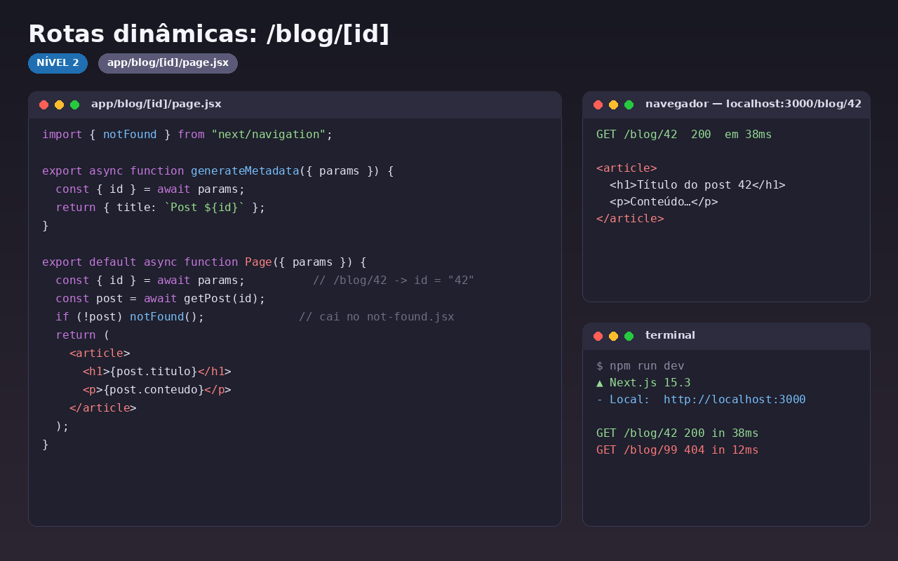

Rotas dinâmicas [id]
A Ana 👩💻 tinha um blog estático: uma página para cada post, escrita na mão. Quando o blog ganhou 50 posts, criar página nova virou um trabalho braçal. A solução dela foi uma pasta com colchetes — app/blog/[id]/page.jsx — que atende qualquer post. Nesta página você vai construir exatamente isso.
- Por que a pasta
[id]vira uma rota curinga (ex:/blog/42) - Como ler o valor do segmento com
await paramsno Next.js 15 - Gerar título e descrição por rota com
generateMetadata - Disparar o 404 com
notFound()
A ideia: a gaveta etiquetada "nº ___"
Imagine o arquivo de uma repartição pública. Existe uma gaveta física para cada número? Não — existe uma gaveta por andar, etiquetada "documento nº ___", e o número é preenchido na hora em que alguém pede. A pasta [id] funciona exatamente assim: o [id] é um espaço em branco no endereço. Quando o navegador pede /blog/42, o Next.js preenche o espaço em branco com "42" e entrega esse valor para a sua página dentro de um objeto chamado params.
O detalhe esperto é que uma única página atende infinitas URLs. Você não escreve 50 arquivos; escreve um único arquivo que sabe ler a etiqueta da gaveta e buscar o post correspondente no banco. A rota continua existindo de verdade — /blog/42 e /blog/99 são endereços distintos, com SEO próprio — mas o código que as renderiza é só um.
E por que o valor chega dentro de uma Promise (por isso o await)? Porque no Next.js 15 o params é assíncrono de propósito: a framework pode esperar os dados chegarem antes de decidir como renderizar, o que habilita streaming e páginas parciais. A regra prática é simples: no App Router moderno, sempre faça const { id } = await params; no começo da página.
Montando a rota dinâmica
Crie a pasta app/blog/[id]/ e dentro dela o arquivo page.jsx. O nome da pasta entre colchetes é o nome da chave que chega em params. Se a pasta fosse [slug], você receberia params.slug. Pode haver vários segmentos dinâmicos na mesma rota: app/loja/[categoria]/[produto]/page.jsx recebe params.categoria e params.produto.
import { notFound } from "next/navigation";
async function getPost(id) {
// no mundo real: busca no banco de dados
const res = await fetch(`https://api.exemplo.com/posts/${id}`, {
next: { revalidate: 60 },
});
if (!res.ok) return null;
return res.json();
}
export default async function BlogPostPage({ params }) {
// Next.js 15: params é uma Promise — sempre espere antes de usar
const { id } = await params; // /blog/42 -> id === "42"
const post = await getPost(id);
if (!post) notFound(); // joga para o not-found.jsx mais próximo
return (
<article>
<h1>{post.titulo}</h1>
<p>{post.conteudo}</p>
</article>
);
}
Repare em três pontos: a página é async (Server Component assíncrono, padrão do App Router), o params é desempacotado com await, e o notFound() arremessa a requisição para o arquivo not-found.jsx mais próximo — falaremos dele na página de estados especiais.
Metadados por rota: generateMetadata
Toda rota pode ter o próprio <title> e descrição. Basta exportar uma função generateMetadata no mesmo arquivo da página. Ela recebe os mesmos params — também com await — e você usa o id para montar um título único por post, o que é ouro para SEO:
export async function generateMetadata({ params }) {
const { id } = await params;
const post = await getPost(id);
return {
title: post ? `${post.titulo} | Blog da Ana` : "Post não encontrado",
description: post?.resumo,
};
}
| Convenção | Exemplo de URL | O que chega em params |
|---|---|---|
app/blog/[id]/page.jsx | /blog/42 | { id: "42" } |
app/loja/[cat]/[prod]/page.jsx | /loja/calcados/tenis-90 | { cat: "calcados", prod: "tenis-90" } |
page.jsx recebe também searchParams | /blog?pagina=2 | searchParams.pagina === "2" (também com await) |
generateMetadata({ params }) | — | retorna { title, description } por rota |
notFound() | — | renderiza o not-found.jsx mais próximo com status 404 |
Missão: o Blog da Ana tem uma lista de posts e um "id selecionado". Complete a função postSelecionado para devolver o post cujo id bate com o selecionado (use posts.find(...)). Depois clique em um post e rode — o detalhe deve aparecer.
function App() {
const posts = [
{ id: "1", titulo: "Primeiro post", texto: "Olá, mundo!" },
{ id: "2", titulo: "Rotas no Next", texto: "[id] é um curinga." },
{ id: "3", titulo: "Server Actions", texto: "Form sem JavaScript." },
];
const [selecionado, setSelecionado] = React.useState("1");
// 👉 complete aqui: devolva o post cujo id é `selecionado`
const postSelecionado = null;
return (
<div style={{ fontFamily: "sans-serif", padding: 16 }}>
<ul>
{posts.map((p) => (
<li key={p.id}>
<a href="#" onClick={(e) => { e.preventDefault(); setSelecionado(p.id); }}>
{p.titulo}
</a>
</li>
))}
</ul>
<hr />
{postSelecionado
? <div><h2>{postSelecionado.titulo}</h2><p>{postSelecionado.texto}</p></div>
: <p>Nenhum post selecionado</p>}
</div>
);
}function App() {
const posts = [
{ id: "1", titulo: "Primeiro post", texto: "Olá, mundo!" },
{ id: "2", titulo: "Rotas no Next", texto: "[id] é um curinga." },
{ id: "3", titulo: "Server Actions", texto: "Form sem JavaScript." },
];
const [selecionado, setSelecionado] = React.useState("1");
// a "gaveta etiquetada": acha o post pela etiqueta (id)
const postSelecionado = posts.find((p) => p.id === selecionado);
return (
<div style={{ fontFamily: "sans-serif", padding: 16 }}>
<ul>
{posts.map((p) => (
<li key={p.id}>
<a href="#" onClick={(e) => { e.preventDefault(); setSelecionado(p.id); }}>
{p.titulo}
</a>
</li>
))}
</ul>
<hr />
{postSelecionado
? <div><h2>{postSelecionado.titulo}</h2><p>{postSelecionado.texto}</p></div>
: <p>Nenhum post selecionado</p>}
</div>
);
}
app/blog/[id]/page.jsx servindo /blog/42 e devolvendo 404 para /blog/99 quando o post não existe.Quando dá errado
await no params. No Next.js 15, usar params.id direto acusa na hora — a mensagem real aparece no terminal e na página de erro do dev:Error: Route "/blog/[id]" used `params.id`. `params` should be awaited before using its properties. Learn more: https://nextjs.org/docs/messages/sync-dynamic-apis
Tradução: a rota usou params.id sem esperar. Correção: declare a página como async e faça const { id } = await params; antes de qualquer uso. Outro erro clássico: nomear a pasta app/blog/id/page.jsx (sem colchetes) achando que é dinâmico — sem [] a pasta vira uma rota literal chamada /blog/id.
Exercícios
1. Qual pasta cria uma rota que aceita qualquer valor em /produto/…?
2. No Next.js 15, como se lê o segmento dinâmico dentro da página?
3. Complete o comando: para mandar a rota para a página de 404 quando o post não existe, escreva a chamada de função dentro do if (!post):